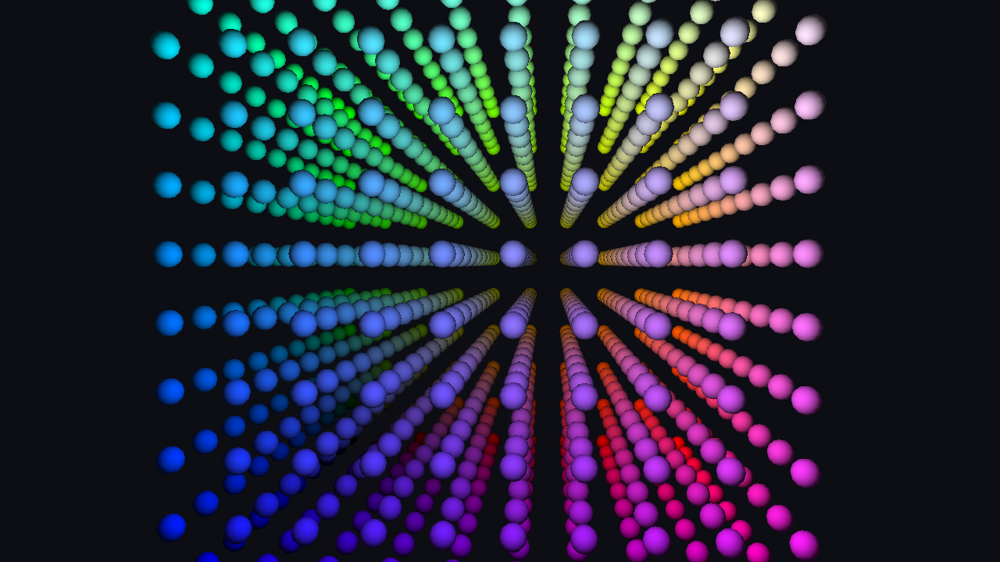

Mesh Shading
In this tutorial, you'll render 1,000 procedural UV spheres using the mesh shader pipeline with GPU-driven frustum culling. This demonstrates the modern mesh shading approach where geometry is generated and culled entirely on the GPU.
Note
This tutorial requires a GPU with mesh shading support (e.g., NVIDIA Turing+, AMD RDNA 2+, or Apple M3+).
Overview
This tutorial covers:
- Creating a mesh shading pipeline with amplification, mesh, and pixel stages
- Generating procedural sphere geometry (vertices and triangles) on the CPU
- Implementing GPU-driven frustum culling in the amplification shader
- Using
groupsharedmemory and atomic operations for visible instance compaction - Extracting frustum planes from the view-projection matrix
- Dispatching mesh groups with
DispatchMesh
Key Concepts
Mesh Shader Pipeline
The mesh shader pipeline replaces the traditional vertex/geometry pipeline:
| Stage | Role | Thread Group Size |
|---|---|---|
| Amplification | Decides which mesh groups to spawn (culling) | 32 |
| Mesh | Outputs vertices and triangles per group | 120 |
| Pixel | Standard fragment shading | — |
Frustum Culling
The amplification shader tests each instance's bounding sphere against 6 frustum planes. Only visible instances are passed to mesh shader groups via a payload:
Payload { InstanceIndices[ASGroupSize] }
// Amplification:
visible = !IsFrustumCulled(position, radius)
if (visible) payload.InstanceIndices[atomicAdd(count)] = instanceIndex
DispatchMesh(visibleCount, 1, 1, payload)
The Renderer Class
Create the file Renderers/MeshShadingRenderer.cs:
namespace ZenithTutorials.Renderers;
internal unsafe class MeshShadingRenderer : IRenderer
{
private const uint ASGroupSize = 32;
private const uint MeshGroupSize = 120;
private const uint GridSize = 10;
private const uint TotalInstances = GridSize * GridSize * GridSize;
private const uint DispatchGroupCount = (TotalInstances + ASGroupSize - 1) / ASGroupSize;
private const string ShaderSource = """
static const uint GridSize = 10;
static const uint TotalInstances = GridSize * GridSize * GridSize;
static const float InstanceSpacing = 2.5;
static const uint ASGroupSize = 32;
static const float BoundingSphereRadius = 0.5;
static const uint SphereVertexCount = 62;
static const uint SphereTriangleCount = 120;
static const float GridOffset = float(GridSize - 1) * 0.5 * InstanceSpacing;
struct Vertex
{
private float4 PositionAndPadding;
private float4 NormalAndPadding;
property float3 Position
{
get {
return PositionAndPadding.xyz;
}
}
property float3 Normal
{
get {
return NormalAndPadding.xyz;
}
}
};
struct Triangle
{
private uint4 IndicesAndPadding;
property uint3 Indices
{
get {
return IndicesAndPadding.xyz;
}
}
};
struct Payload
{
uint InstanceIndices[ASGroupSize];
};
struct VertexOutput
{
float4 Position : SV_POSITION;
float3 WorldNormal : WORLDNORMAL;
float3 Color : COLOR;
};
struct Constants
{
float4x4 ViewProjection;
float4 FrustumPlanes[6];
private float4 TimeAndLightDirection;
property float Time
{
get {
return TimeAndLightDirection.x;
}
}
property float3 LightDirection
{
get {
return TimeAndLightDirection.yzw;
}
}
};
void DecomposeInstanceID(uint id, out uint x, out uint y, out uint z)
{
x = id % GridSize;
y = (id / GridSize) % GridSize;
z = id / (GridSize * GridSize);
}
float3 InstancePosition(uint id)
{
uint x, y, z;
DecomposeInstanceID(id, x, y, z);
return float3(x, y, z) * InstanceSpacing - GridOffset;
}
float3 InstanceColor(uint id)
{
uint x, y, z;
DecomposeInstanceID(id, x, y, z);
return float3(x, y, z) / float(GridSize - 1);
}
bool IsFrustumCulled(float3 center, float radius)
{
for (uint i = 0; i < 6; i++)
{
float4 plane = constants.FrustumPlanes[i];
if (dot(plane.xyz, center) + plane.w < -radius)
{
return true;
}
}
return false;
}
ConstantBuffer<Constants> constants;
StructuredBuffer<Vertex> vertices;
StructuredBuffer<Triangle> indices;
groupshared Payload s_payload;
groupshared uint s_visibleCount;
[shader("amplification")]
[numthreads(ASGroupSize, 1, 1)]
void ASMain(uint groupID: SV_GroupID, uint groupThreadID: SV_GroupThreadID)
{
uint instanceIndex = groupID * ASGroupSize + groupThreadID;
bool visible = false;
if (instanceIndex < TotalInstances)
{
float3 worldPos = InstancePosition(instanceIndex);
visible = !IsFrustumCulled(worldPos, BoundingSphereRadius);
}
if (groupThreadID == 0)
{
s_visibleCount = 0;
}
GroupMemoryBarrierWithGroupSync();
if (visible)
{
uint offset;
InterlockedAdd(s_visibleCount, 1, offset);
s_payload.InstanceIndices[offset] = instanceIndex;
}
GroupMemoryBarrierWithGroupSync();
DispatchMesh(s_visibleCount, 1, 1, s_payload);
}
[shader("mesh")]
[numthreads(120, 1, 1)]
[outputtopology("triangle")]
void MSMain(uint groupID: SV_GroupID, uint groupThreadID: SV_GroupThreadID, in payload Payload meshPayload,
OutputVertices<VertexOutput, 62> outVertices, OutputIndices<uint3, 120> outIndices)
{
uint instanceIndex = meshPayload.InstanceIndices[groupID];
float3 instancePos = InstancePosition(instanceIndex);
float3 color = InstanceColor(instanceIndex);
SetMeshOutputCounts(SphereVertexCount, SphereTriangleCount);
if (groupThreadID < SphereVertexCount)
{
Vertex v = vertices[groupThreadID];
float3 worldPos = v.Position + instancePos;
VertexOutput output;
output.Position = mul(float4(worldPos, 1.0), constants.ViewProjection);
output.WorldNormal = v.Normal;
output.Color = color;
outVertices[groupThreadID] = output;
}
if (groupThreadID < SphereTriangleCount)
{
outIndices[groupThreadID] = indices[groupThreadID].Indices;
}
}
[shader("pixel")]
float4 PSMain(VertexOutput input) : SV_TARGET
{
float3 lightDir = normalize(constants.LightDirection);
float3 normal = normalize(input.WorldNormal);
float ndotl = max(dot(normal, lightDir), 0.0);
float3 ambient = input.Color * 0.15;
float3 diffuse = input.Color * ndotl * 0.85;
return float4(ambient + diffuse, 1.0);
}
""";
private readonly Buffer vertexBuffer;
private readonly Buffer indexBuffer;
private readonly Buffer constantsBuffer;
private readonly ResourceLayout resourceLayout;
private readonly ResourceTable resourceTable;
private readonly MeshShadingPipeline pipeline;
private float totalTime;
public MeshShadingRenderer()
{
if (!App.Context.Capabilities.MeshShadingSupported)
{
throw new NotSupportedException("Mesh shading is not supported on this device.");
}
const int lonSegments = 12;
const int latSegments = 6;
const float radius = 0.5f;
List<Vertex> sphereVertices = [];
List<Triangle> sphereTriangles = [];
sphereVertices.Add(new() { Position = new(0, radius, 0), Normal = Vector3.UnitY });
for (int lat = 1; lat < latSegments; lat++)
{
float phi = MathF.PI * lat / latSegments;
float sinPhi = MathF.Sin(phi);
float cosPhi = MathF.Cos(phi);
for (int lon = 0; lon < lonSegments; lon++)
{
float theta = 2.0f * MathF.PI * lon / lonSegments;
Vector3 normal = new(sinPhi * MathF.Cos(theta), cosPhi, sinPhi * MathF.Sin(theta));
sphereVertices.Add(new() { Position = normal * radius, Normal = normal });
}
}
sphereVertices.Add(new() { Position = new(0, -radius, 0), Normal = -Vector3.UnitY });
for (int lon = 0; lon < lonSegments; lon++)
{
uint next = (uint)((lon + 1) % lonSegments);
sphereTriangles.Add(new() { Index0 = 0, Index1 = (uint)(1 + lon), Index2 = 1 + next });
}
for (int lat = 0; lat < latSegments - 2; lat++)
{
for (int lon = 0; lon < lonSegments; lon++)
{
uint next = (uint)((lon + 1) % lonSegments);
uint tl = (uint)(1 + (lat * lonSegments) + lon);
uint tr = (uint)(1 + (lat * lonSegments)) + next;
uint bl = (uint)(1 + ((lat + 1) * lonSegments) + lon);
uint br = (uint)(1 + ((lat + 1) * lonSegments)) + next;
sphereTriangles.Add(new() { Index0 = tl, Index1 = bl, Index2 = tr });
sphereTriangles.Add(new() { Index0 = tr, Index1 = bl, Index2 = br });
}
}
uint bottomPole = (uint)(sphereVertices.Count - 1);
uint lastRing = 1 + ((latSegments - 2) * lonSegments);
for (int lon = 0; lon < lonSegments; lon++)
{
uint next = (uint)((lon + 1) % lonSegments);
sphereTriangles.Add(new() { Index0 = bottomPole, Index1 = lastRing + next, Index2 = lastRing + (uint)lon });
}
Vertex[] vertexData = [.. sphereVertices];
Triangle[] triangleData = [.. sphereTriangles];
vertexBuffer = App.Context.CreateBuffer(new()
{
SizeInBytes = (uint)(sizeof(Vertex) * vertexData.Length),
StrideInBytes = (uint)sizeof(Vertex),
Flags = BufferUsageFlags.ShaderResource
});
vertexBuffer.Upload(vertexData, 0);
indexBuffer = App.Context.CreateBuffer(new()
{
SizeInBytes = (uint)(sizeof(Triangle) * triangleData.Length),
StrideInBytes = (uint)sizeof(Triangle),
Flags = BufferUsageFlags.ShaderResource
});
indexBuffer.Upload(triangleData, 0);
constantsBuffer = App.Context.CreateBuffer(new()
{
SizeInBytes = (uint)sizeof(Constants),
StrideInBytes = (uint)sizeof(Constants),
Flags = BufferUsageFlags.Constant | BufferUsageFlags.MapWrite
});
resourceLayout = App.Context.CreateResourceLayout(new()
{
Bindings = BindingHelper.Bindings
(
new() { Type = ResourceType.ConstantBuffer, Count = 1, StageFlags = ShaderStageFlags.Amplification | ShaderStageFlags.Mesh | ShaderStageFlags.Pixel },
new() { Type = ResourceType.StructuredBuffer, Count = 1, StageFlags = ShaderStageFlags.Mesh },
new() { Type = ResourceType.StructuredBuffer, Count = 1, StageFlags = ShaderStageFlags.Mesh }
)
});
resourceTable = App.Context.CreateResourceTable(new()
{
Layout = resourceLayout,
Resources = [constantsBuffer, vertexBuffer, indexBuffer]
});
using Shader ampShader = App.Context.LoadShaderFromSource(ShaderSource, "ASMain", ShaderStageFlags.Amplification);
using Shader meshShader = App.Context.LoadShaderFromSource(ShaderSource, "MSMain", ShaderStageFlags.Mesh);
using Shader pixelShader = App.Context.LoadShaderFromSource(ShaderSource, "PSMain", ShaderStageFlags.Pixel);
pipeline = App.Context.CreateMeshShadingPipeline(new()
{
RenderStates = new()
{
RasterizerState = RasterizerStates.CullBack,
DepthStencilState = DepthStencilStates.Default,
BlendState = BlendStates.Opaque
},
Amplification = ampShader,
Mesh = meshShader,
Pixel = pixelShader,
ResourceLayout = resourceLayout,
PrimitiveTopology = PrimitiveTopology.TriangleList,
Output = App.FrameBuffer.Output,
AmplificationThreadGroupSizeX = ASGroupSize,
AmplificationThreadGroupSizeY = 1,
AmplificationThreadGroupSizeZ = 1,
MeshThreadGroupSizeX = MeshGroupSize,
MeshThreadGroupSizeY = 1,
MeshThreadGroupSizeZ = 1
});
}
public void Update(double deltaTime)
{
totalTime += (float)deltaTime;
float angle = totalTime * 0.3f;
Vector3 cameraPos = new(35.0f * MathF.Sin(angle), 20.0f * MathF.Sin(totalTime * 0.2f), 35.0f * MathF.Cos(angle));
Matrix4x4 view = Matrix4x4.CreateLookAt(cameraPos, Vector3.Zero, Vector3.UnitY);
Matrix4x4 projection = Matrix4x4.CreatePerspectiveFieldOfView(float.DegreesToRadians(45.0f), (float)App.Width / App.Height, 0.1f, 200.0f);
Matrix4x4 viewProjection = view * projection;
constantsBuffer.Upload([new Constants()
{
ViewProjection = viewProjection,
FrustumPlane0 = NormalizePlane(new(viewProjection.M11 + viewProjection.M14, viewProjection.M21 + viewProjection.M24, viewProjection.M31 + viewProjection.M34, viewProjection.M41 + viewProjection.M44)),
FrustumPlane1 = NormalizePlane(new(viewProjection.M14 - viewProjection.M11, viewProjection.M24 - viewProjection.M21, viewProjection.M34 - viewProjection.M31, viewProjection.M44 - viewProjection.M41)),
FrustumPlane2 = NormalizePlane(new(viewProjection.M12 + viewProjection.M14, viewProjection.M22 + viewProjection.M24, viewProjection.M32 + viewProjection.M34, viewProjection.M42 + viewProjection.M44)),
FrustumPlane3 = NormalizePlane(new(viewProjection.M14 - viewProjection.M12, viewProjection.M24 - viewProjection.M22, viewProjection.M34 - viewProjection.M32, viewProjection.M44 - viewProjection.M42)),
FrustumPlane4 = NormalizePlane(new(viewProjection.M13, viewProjection.M23, viewProjection.M33, viewProjection.M43)),
FrustumPlane5 = NormalizePlane(new(viewProjection.M14 - viewProjection.M13, viewProjection.M24 - viewProjection.M23, viewProjection.M34 - viewProjection.M33, viewProjection.M44 - viewProjection.M43)),
Time = totalTime,
LightDirection = -Vector3.Normalize(cameraPos)
}], 0);
}
public void Render()
{
CommandBuffer commandBuffer = App.Context.Graphics.CommandBuffer();
commandBuffer.BeginRenderPass(App.FrameBuffer, new()
{
ColorValues = [new(0.05f, 0.05f, 0.08f, 1.0f)],
Depth = 1.0f,
Stencil = 0,
Flags = ClearFlags.All
}, resourceTable);
commandBuffer.SetPipeline(pipeline);
commandBuffer.SetResourceTable(resourceTable);
commandBuffer.DispatchMesh(DispatchGroupCount, 1, 1);
commandBuffer.EndRenderPass();
commandBuffer.Submit(waitForCompletion: true);
}
public void Resize(uint width, uint height)
{
}
public void Dispose()
{
pipeline.Dispose();
resourceTable.Dispose();
resourceLayout.Dispose();
constantsBuffer.Dispose();
indexBuffer.Dispose();
vertexBuffer.Dispose();
}
private static Vector4 NormalizePlane(Vector4 plane)
{
return plane / new Vector3(plane.X, plane.Y, plane.Z).Length();
}
}
[StructLayout(LayoutKind.Explicit, Size = 32)]
file struct Vertex
{
[FieldOffset(0)]
public Vector3 Position;
[FieldOffset(16)]
public Vector3 Normal;
}
[StructLayout(LayoutKind.Explicit, Size = 16)]
file struct Triangle
{
[FieldOffset(0)]
public uint Index0;
[FieldOffset(4)]
public uint Index1;
[FieldOffset(8)]
public uint Index2;
}
[StructLayout(LayoutKind.Explicit, Size = 176)]
file struct Constants
{
[FieldOffset(0)]
public Matrix4x4 ViewProjection;
[FieldOffset(64)]
public Vector4 FrustumPlane0;
[FieldOffset(80)]
public Vector4 FrustumPlane1;
[FieldOffset(96)]
public Vector4 FrustumPlane2;
[FieldOffset(112)]
public Vector4 FrustumPlane3;
[FieldOffset(128)]
public Vector4 FrustumPlane4;
[FieldOffset(144)]
public Vector4 FrustumPlane5;
[FieldOffset(160)]
public float Time;
[FieldOffset(164)]
public Vector3 LightDirection;
}
Running the Tutorial
Run the application and select 7. Mesh Shading from the menu:
dotnet run
Result

Code Breakdown
Procedural Sphere Geometry
The sphere is generated as a UV sphere with 12 longitude and 6 latitude segments, producing 62 vertices and 120 triangles:
sphereVertices.Add(new() { Position = new(0, radius, 0), Normal = Vector3.UnitY });
for (int lat = 1; lat < latSegments; lat++)
{
float phi = MathF.PI * lat / latSegments;
float sinPhi = MathF.Sin(phi);
float cosPhi = MathF.Cos(phi);
for (int lon = 0; lon < lonSegments; lon++)
{
float theta = 2.0f * MathF.PI * lon / lonSegments;
Vector3 normal = new(sinPhi * MathF.Cos(theta), cosPhi, sinPhi * MathF.Sin(theta));
sphereVertices.Add(new() { Position = normal * radius, Normal = normal });
}
}
sphereVertices.Add(new() { Position = new(0, -radius, 0), Normal = -Vector3.UnitY });
The vertex and index data are stored in StructuredBuffer resources (not vertex/index buffers), since mesh shaders read geometry data directly.
Mesh Shading Pipeline
The pipeline configuration specifies thread group sizes for both amplification and mesh stages:
pipeline = App.Context.CreateMeshShadingPipeline(new()
{
RenderStates = new()
{
RasterizerState = RasterizerStates.CullBack,
DepthStencilState = DepthStencilStates.Default,
BlendState = BlendStates.Opaque
},
Amplification = ampShader,
Mesh = meshShader,
Pixel = pixelShader,
ResourceLayout = resourceLayout,
PrimitiveTopology = PrimitiveTopology.TriangleList,
Output = App.FrameBuffer.Output,
AmplificationThreadGroupSizeX = ASGroupSize,
AmplificationThreadGroupSizeY = 1,
AmplificationThreadGroupSizeZ = 1,
MeshThreadGroupSizeX = MeshGroupSize,
MeshThreadGroupSizeY = 1,
MeshThreadGroupSizeZ = 1
});
Amplification Shader (Culling)
The amplification shader tests each instance against the camera frustum and only dispatches mesh groups for visible instances:
[shader("amplification")]
[numthreads(ASGroupSize, 1, 1)]
void ASMain(uint groupID: SV_GroupID, uint groupThreadID: SV_GroupThreadID)
{
uint instanceIndex = groupID * ASGroupSize + groupThreadID;
bool visible = false;
if (instanceIndex < TotalInstances)
{
float3 worldPos = InstancePosition(instanceIndex);
visible = !IsFrustumCulled(worldPos, BoundingSphereRadius);
}
if (groupThreadID == 0)
{
s_visibleCount = 0;
}
GroupMemoryBarrierWithGroupSync();
if (visible)
{
uint offset;
InterlockedAdd(s_visibleCount, 1, offset);
s_payload.InstanceIndices[offset] = instanceIndex;
}
GroupMemoryBarrierWithGroupSync();
DispatchMesh(s_visibleCount, 1, 1, s_payload);
}
Key steps:
- Each thread checks one instance against 6 frustum planes
- Visible instances are compacted into a
groupsharedpayload usingInterlockedAdd DispatchMeshspawns only as many mesh groups as there are visible instances
Frustum Plane Extraction
Frustum planes are extracted from the view-projection matrix on the CPU:
FrustumPlane0 = NormalizePlane(new(viewProjection.M11 + viewProjection.M14, viewProjection.M21 + viewProjection.M24, viewProjection.M31 + viewProjection.M34, viewProjection.M41 + viewProjection.M44)),
| Plane | Extraction |
|---|---|
| Left | Row 4 + Row 1 |
| Right | Row 4 - Row 1 |
| Bottom | Row 4 + Row 2 |
| Top | Row 4 - Row 2 |
| Near | Row 3 |
| Far | Row 4 - Row 3 |
Constants Layout
The Constants struct packs all per-frame data into 176 bytes:
[StructLayout(LayoutKind.Explicit, Size = 176)]
file struct Constants
{
[FieldOffset(0)]
public Matrix4x4 ViewProjection;
[FieldOffset(64)]
public Vector4 FrustumPlane0;
[FieldOffset(80)]
public Vector4 FrustumPlane1;
[FieldOffset(96)]
public Vector4 FrustumPlane2;
[FieldOffset(112)]
public Vector4 FrustumPlane3;
[FieldOffset(128)]
public Vector4 FrustumPlane4;
[FieldOffset(144)]
public Vector4 FrustumPlane5;
[FieldOffset(160)]
public float Time;
[FieldOffset(164)]
public Vector3 LightDirection;
}
The constant buffer is shared across all three shader stages (Amplification | Mesh | Pixel), so the amplification shader can read frustum planes while the pixel shader reads the light direction.
Source Code
Tip
View the complete source code on GitHub: MeshShadingRenderer.cs